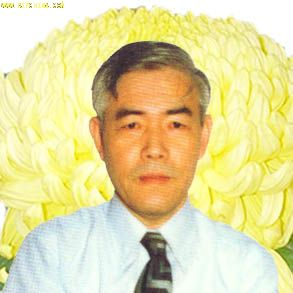
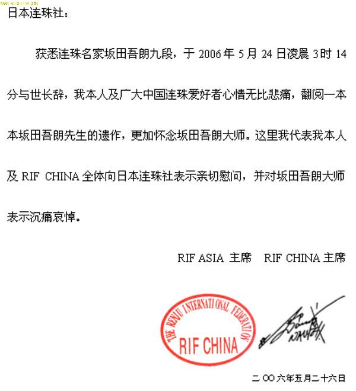

RIF CHINA 为坂田吾朗九段去世所发唁电
#1 RIF CHINA 为坂田吾朗九段去世所发唁电 作者：星月族 发表时间：2009-12-30 10:46:05

坂田吾朗九段

RIF CHINA 为坂田吾朗九段去世所发唁电
#2 Re:RIF CHINA 为坂田吾朗九段去世所发唁电 作者：小丸.net 发表时间：2009-12-30 14:06:03
虽然坂田已经逝世几百年了，虽然这份唁电已经N年了，虽然这只是个旧闻，但是还是对坂田的逝世表示沉痛的哀悼。
#3 Re:RIF CHINA 为坂田吾朗九段去世所发唁电 作者：无尽 发表时间：2009-12-30 15:35:44
哀悼 印象中国至少有1、2本五子棋已出版书籍内容基本都是抄袭坂田先生的
印象中国至少有1、2本五子棋已出版书籍内容基本都是抄袭坂田先生的
#4 坂田吾朗九段简历 作者：星月族 发表时间：2009-12-30 17:41:10
日本连珠棋界元老。东京中野人氏，1928年5月生。日本大学工学部毕业，1956年初段，1979年晋为8段，曾任日本连珠棋社副理事长。1960——1970年和1982——1989年任日本连珠棋社机关杂志〈连珠世界〉主编，之后，作为日本连珠棋社服务部负责人，担任日本多种报刊连珠专栏主笔，是创办〈社团法人*日本连珠社〉的功臣，创造了 SAKATA规则，一直为连珠棋的普及和发展尽心尽力。
著有〈连珠棋胜法〉〈连珠必胜法〉〈图解五子棋入门〉〈三手胜五子棋题〉（强烈推荐）〈五子棋初步〉英文版〈五子棋〉等
#5 Re:RIF CHINA 为坂田吾朗九段去世所发唁电 作者：飞飞 发表时间：2010-1-12 10:21:22
坂田的书很不错的！有关棋理的启发。#6 Re:RIF CHINA 为坂田吾朗九段去世所发唁电 作者：dyccj 发表时间：2011-9-1 13:51:46
坂田吾朗和坂田吾端啥关系？#7 Re:RIF CHINA 为坂田吾朗九段去世所发唁电 作者：小丸.net 发表时间：2011-9-1 13:53:13
坂田吾端是日文名字写法。坂田吾朗是日文名字的读法